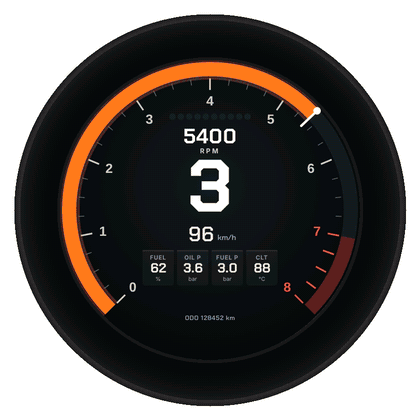
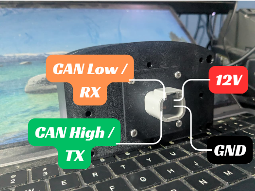
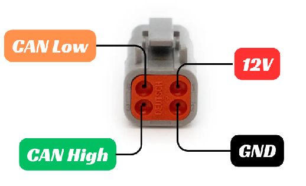

Terakhir diperbarui: 4 November 2026
Mazduino Dash R4¶
Gambaran Umum¶

Beberapa tema Dash R4: Street (bawaan), Wangan Night, Classic Beetle, Motorsport, Car Status, Retro VFD, Synthwave, Halo, Ink Wave, dan Classic
Mazduino Dash R4 adalah dash display bulat 4 inch dengan layar sentuh. Tampilannya berupa tema, yang bisa dipasang, dilepas, dan diatur sendiri dari aplikasi DashTune lewat Bluetooth. Pilihannya mulai dari gauge balap, gauge klasik, sampai tema dengan foto mobil Anda sendiri.
| Varian | Ukuran Layar | Konektor |
|---|---|---|
| Dash R4 | 4 inch, bulat | DTM4 (Deutsch DTM 4 Pin) |
Fitur Utama¶
- Puluhan tema siap pasang dari Theme Store di DashTune, dan sampai 10 tema tersimpan di dash sekaligus. Tema Street sudah tertanam di firmware dan selalu ada.
- Isi panel data di tiap tema bisa diganti sendiri, misalnya dari Oil Pressure menjadi IAT.
- Mendukung rusEFI, Haltech, MaxxECU, ECUMASTER EMU Black, Link Generic Dash, Speeduino, OBD-II, dan M-Link (CAN IO Extender).
- Konsumsi bahan bakar (km/l) dihitung di dash, kalau ECU mengirim data fuel flow dan kecepatan.
- Peringatan (alarm) untuk Oil Pressure, Fuel Pressure, CLT, Oil Temp, Fuel Level, dan Battery.
- Input tambahan: sinyal turn signal, head light, dan fuel level bisa diambil dari mobil, dan layar meredup otomatis saat lampu menyala. Input head light juga bisa dipakai untuk tombol ganti tema.
- Petunjuk arah Google Maps dan musik dari HP tampil sebagai notifikasi singkat di layar.
- Splash screen sendiri saat dinyalakan, bisa beranimasi, atau dari GIF dan video.
- Update firmware lewat aplikasi, tanpa kabel.
Konektor DTM4 / 4 Pin¶
Dash R4 memakai konektor DTM4 (Deutsch DTM 4 Pin) yang sama dengan Racedash Pro, baik bentuk fisiknya maupun fungsi tiap pin. Kabel dari Racedash Pro bisa langsung dipakai.

Dash connector side

Cable connector side
| No. Pin | Deskripsi |
|---|---|
| 1 | 12V Power Supply |
| 2 | Ground |
| 3 | CAN High / TX |
| 4 | CAN Low / RX |
Catatan:
- Pin 3 dan 4 berfungsi sebagai CAN High/CAN Low untuk semua ECU yang memakai CAN Bus (rusEFI, Haltech, MaxxECU, ECUMASTER, Link, OBD-II, M-Link).
- Khusus untuk ECU Speeduino, pin 3 dan 4 berfungsi sebagai TX/RX Serial, karena Speeduino tidak memiliki CAN Bus native.
ECU yang didukung¶
| ECU | Cara sambung |
|---|---|
| rusEFI | CAN Bus 500 kbps |
| Haltech | CAN Bus 1 Mbps |
| MaxxECU | CAN Bus 500 kbps |
| ECUMASTER EMU Black | CAN Bus 1 Mbps |
| Link Generic Dash | CAN Bus 1 Mbps |
| Speeduino | Serial |
| OBD-II | CAN Bus (ISO 15765-4) |
| M-Link (CAN IO Extender) | CAN Bus 500 kbps |
Tipe ECU dipilih dari menu di layar dash (Settings → ECU) atau dari DashTune (General Setting). Tidak perlu ganti firmware, dan kecepatan CAN ikut menyesuaikan sendiri.
- Berpindah antar-ECU yang sama-sama memakai CAN Bus langsung berlaku, tanpa restart.
- Berpindah dari atau ke Speeduino baru berlaku setelah dash dimatikan dan dinyalakan kembali, karena fungsi pin 3 dan 4 ikut berubah.
Apa yang harus diaktifkan di masing-masing ECU dibahas di Konfigurasi ECU untuk Racedash. Pengaturannya sama untuk Dash R4.
OBD-II: tidak semua mobil OBD-II bisa dibaca, dan datanya bergantung pada apa yang dijawab mobil Anda. Batasannya sama dengan Racedash Pro, baca Batasan OBD-II sebelum membeli untuk keperluan OBD-II.
Tema¶
Tema adalah tampilan dashboard. Setiap tema membawa susunan gauge, warna, dan gambarnya sendiri, seperti contoh di Gambaran Umum.
Daftar lengkap ada di Theme Store DashTune, dan tema baru terus ditambahkan.
Berpindah tema¶
- Geser kiri atau kanan di layar untuk pindah ke tema berikutnya.
- Atau buka menu dash, pilih Themes, lalu ketuk tema yang diinginkan.
Dash mengingat tema terakhir yang tampil. Kalau ingin dash selalu menyala dengan tema tertentu, buka Themes di menu dash lalu tekan Set default pada tema tersebut.
Memasang tema dari DashTune¶
- Sambungkan DashTune ke dash (lihat Menyambungkan pertama kali).
- Buka menu Tema. Di sini tampil tema yang sudah terpasang di dash, lengkap dengan gambarnya, beserta jumlahnya (misalnya "4 dari 10 tema").
- Buka Theme Store, pilih tema, lalu tekan unduh.
- Tema dikirim ke dash lewat WiFi dash. Prosesnya berjalan sendiri, jadi biarkan layar HP menyala dan jangan tutup aplikasi sampai selesai.
Dash menyimpan paling banyak 10 tema. Kalau sudah penuh, DashTune akan menanyakan tema mana yang dihapus untuk memberi tempat bagi tema baru. Tema yang dihapus tetap ada di Theme Store dan bisa dipasang lagi kapan saja.
Kalau tema yang terpasang punya versi lebih baru di store, DashTune menandainya dengan UPDATE.
Mengatur tema (Sesuaikan)¶
Di menu Tema, pilih tema yang terpasang lalu tekan Sesuaikan. Yang bisa diatur berbeda-beda per tema:
- Isi panel data: tiap panel diberi nama Data 1, Data 2, dan seterusnya. Pilih data yang ingin ditampilkan di panel itu, misalnya Oil Pressure, Fuel Pressure, CLT, IAT, AFR, Battery, atau KM/L.
- Foto mobil (tema Car Status): ganti foto mobil bawaan dengan foto mobil Anda sendiri.
- Tulisan (misalnya tema Ink Wave dan Sticker Bomb): ganti tulisan pada tema dengan nama mobil atau tim Anda.
- Warna dan pilihan lain yang disediakan tema.
Perubahan dikirim ke dash dan tetap tersimpan meski dash dimatikan.
Memasang foto mobil sendiri (Car Status)¶
- Di Sesuaikan, pilih Ganti foto, lalu Ambil foto atau Pilih dari galeri. Foto mobil dari samping depan memberi hasil terbaik.
- Pilih cara menangani latar belakang foto:
- Otomatis: aplikasi memotong mobil dari latarnya sendiri.
- Manual: hapus latar dengan jari, dengan tombol Hapus, Kembalikan, dan Urungkan.
- Biarkan: foto dipakai apa adanya, lengkap dengan latarnya.
- Geser dan cubit foto agar mobil pas di dalam bingkai. Bingkai menunjukkan area yang tampil di dash.
- Ketuk bagian lampu yang diminta (misalnya lampu depan), mengikuti Contoh di bawah bingkai. Dari sini dash tahu letak lampu yang menyala bersama data dari ECU.
- Tekan Simpan untuk mengirim foto ke dash.
Menu di layar dash¶
Gerakan di layar¶
| Gerakan | Hasil |
|---|---|
| Geser kiri / kanan | Ganti tema |
| Geser ke atas dari bagian bawah layar | Buka menu |
| Geser ke bawah | Tutup menu |
| Ketuk banner peringatan | Diamkan peringatan itu selama 60 detik |
| Ketuk splash screen | Lewati splash, langsung ke dashboard |
Cara membuka menu bisa diganti menjadi ketuk dua kali (Double tap) lewat Settings → Open menu.
Susunan menu¶
MENU
├── Settings → Brightness, ECU, Max RPM, Shift RPM, Fuel tank, Open menu
├── Themes → daftar tema; ketuk untuk menampilkan, Set default untuk tema saat menyala
└── Music → lagu yang sedang diputar di HP, dengan tombol sebelumnya / putar-jeda / berikutnya
Settings¶
| Pengaturan | Fungsi |
|---|---|
| Brightness | Kecerahan layar, 20–100% |
| ECU | Tipe ECU / protokol |
| Max RPM | Skala penuh RPM, naik-turun 500 RPM |
| Shift RPM | RPM saat shift light mulai menyala |
| Fuel tank | Kapasitas tangki dalam liter, untuk menghitung sisa bahan bakar |
| Open menu | Cara membuka menu: Swipe up atau Double tap |
Nilai-nilai ini sama dengan yang diatur di General Setting DashTune, dan disimpan saat menu ditutup (Done).
Peringatan (alarm)¶
Kalau sebuah nilai melewati batas selama lebih dari 1 detik, banner peringatan muncul di bagian bawah layar selama 6 detik. Tema tetap terlihat di atasnya. Setelah itu banner hilang 20 detik supaya tampilan tidak tertutup, lalu muncul lagi kalau masalahnya masih ada. Kalau ada beberapa peringatan sekaligus, banner tampil bergantian.
| Data | Batas bawaan |
|---|---|
| Oil Pressure | Di bawah 1,0 bar saat mesin di atas 1200 RPM |
| Fuel Pressure | Di bawah 2,5 bar |
| CLT | Di atas 102 °C |
| Oil Temp | Di atas 125 °C |
| Fuel Level | Di bawah 10% |
| Battery | Di bawah 11,5 V |
Batas tiap data bisa diubah di DashTune, di General Setting → Sumber Data. Ketuk banner untuk mendiamkan peringatan itu selama 60 detik.
Warna gauge di semua tema juga ikut batas yang sama: normal, kuning saat mendekati batas, lalu merah saat melewatinya.
Konsumsi bahan bakar (km/l)¶
Dash menghitung konsumsi bahan bakar dalam km/l dari dua data ECU:
- Fuel flow, misalnya dari rusEFI atau Haltech
- Kecepatan kendaraan (VSS)
Angkanya muncul di tema yang menampilkannya, atau bisa dipasang sendiri lewat Sesuaikan dengan memilih KM/L di salah satu panel data. Saat kendaraan berhenti atau sangat pelan (di bawah 3 km/jam), angkanya 0. Kalau ECU Anda tidak mengirim fuel flow atau kecepatan, nilai ini tidak tersedia.
Input tambahan: turn signal, head light, dan fuel level¶
Untuk ECU yang tidak mengirim data ini, sinyal dari mobil bisa disambungkan ke pin cadangan di Dash R4 lalu diatur dari DashTune di menu Input tambahan.
Penting: semua pin bekerja di 3,3 V. Sinyal 12 V harus lewat proteksi optocoupler. Jangan menyambungkan kabel mobil langsung ke pin.
Pilihan pin, pengaturan, dan kalibrasi fuel level ada di halaman Input Tambahan Dash R4.
Panduan Aplikasi DashTune¶
DashTune adalah aplikasi Android untuk mengatur dash dari HP lewat Bluetooth.
Mendapatkan aplikasinya: buka www.mazduino.com dan cari bagian DashTune di halaman depan. Aplikasi ini masih dalam tahap uji tertutup, jadi aksesnya diberikan per akun. Masukkan alamat email akun Google Play Anda di sana, dan undangan akan dikirim lewat email.
Menyambungkan pertama kali¶
- Nyalakan kunci kontak sampai dash menyala.
- Buka DashTune, masuk ke tab Perangkat, tekan Tambah Dash.
- Tekan Pindai. Dash muncul dengan nama MazduinoDash-R4.
- Pilih dash tersebut. Setelah tersambung, aplikasi langsung membuka halaman menu.
Kalau tidak ketemu: pastikan Bluetooth HP menyala, dash dalam keadaan hidup, dan dash tidak sedang tersambung ke HP lain.
Dash yang sudah pernah disambungkan akan diingat, dan aplikasi menyambung sendiri saat dibuka berikutnya, juga setelah dash dimatikan lalu dinyalakan lagi.
Isi menu DashTune¶
| Menu | Fungsi |
|---|---|
| Tema | Tema yang terpasang, Theme Store, dan Sesuaikan |
| General Setting | Tipe ECU, satuan, mode MAP, RPM, tangki, dan batas peringatan |
| Input tambahan | Pin untuk turn signal, head light (dan peredupan layar) atau tombol ganti tema, dan fuel level |
| Splash | Membuat splash screen sendiri |
| Info | Versi firmware dan kondisi perangkat |
| Update Firmware | Memperbarui firmware dash |
Splash screen¶
Splash screen tampil beberapa detik saat dash dinyalakan, lalu berganti ke tema. Di menu Splash, pilih cara membuatnya:
- Buat sendiri: susun gambar, logo, dan tulisan per layer. Tiap layer bisa diberi animasi masuk sendiri (misalnya fade, pop, spin, slide, flicker, glitch, drop) dan muncul bergantian. Tersedia banyak pilihan font dan efek tulisan, serta tombol untuk menghapus latar belakang gambar.
- GIF: pilih file GIF dari HP.
- Video: pilih video dari galeri, lalu atur panjangnya (1–8 detik), jumlah frame per detik, dan apakah diputar berulang.
GIF dan video diubah dulu di HP agar bisa diputar dash dengan lancar. Semakin panjang animasinya, semakin besar ukurannya dan semakin lama dash menyala, jadi aplikasi membatasinya sekitar 2 MB dan memotong bagian akhir kalau lebih.
Setelah terkirim, tekan Putar di dash atau Mulai ulang dash di halaman yang sama untuk langsung melihat hasilnya.
Seperti tema, splash dikirim lewat WiFi dash, jadi biarkan layar HP menyala dan jangan tutup aplikasi sampai selesai.
Update firmware¶
Masuk ke menu Update Firmware. Aplikasi memeriksa versi terbaru di server dan menampilkan versi yang terpasang sekarang. Kalau ada versi baru, tekan tombol update.
Selama update, dashboard tetap tampil sampai firmware selesai terkirim, lalu dash menyala ulang sendiri dengan firmware baru, dan DashTune menyambung kembali. Kalau firmware baru gagal menyala, dash otomatis kembali ke firmware sebelumnya.
Peringatan: Jangan lakukan update sambil berkendara. Dash menolak update selama mesin hidup. Pastikan kendaraan dalam keadaan aman, listrik tidak terputus, dan aplikasi tidak ditutup sampai selesai.
Fitur relay: Google Maps dan musik¶
DashTune bisa meneruskan petunjuk arah Google Maps dan lagu yang sedang diputar ke dash. Pengaturannya ada di tab Lainnya → Relay.
- Petunjuk arah muncul di bagian atas layar sebagai notifikasi singkat dan agak transparan, lalu hilang sendiri. Notifikasi muncul lagi saat ada belokan atau jalan baru, atau saat jarak ke belokan berikutnya di bawah 200 meter.
- Judul lagu muncul sebentar saat lagu berganti atau saat diputar/dijeda. Lagu yang sedang diputar juga bisa dilihat dan dikendalikan dari menu dash, di Music.
- Ketuk notifikasi untuk menutupnya lebih cepat.
Fitur ini perlu izin akses notifikasi di HP, dan aplikasi akan mengarahkan ke halaman pengaturannya saat pertama kali diaktifkan.
Referensi¶
- Website Mazduino - https://www.mazduino.com/
- Wiki Mazduino - https://wiki.mazduino.com/
- Github Mazduino - https://github.com/mazduino/mazduino